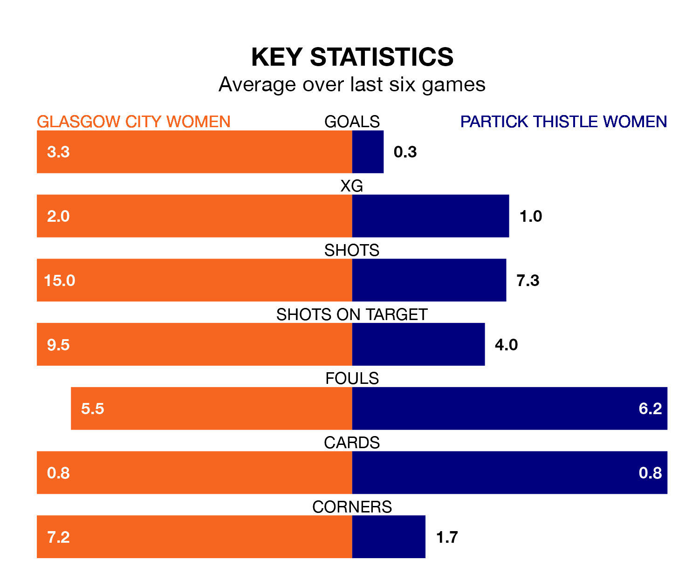

Glasgow City Women host Partick Thistle Women in Wednesday's late match at Petershill Park looking to bounce back from defeat last time out in SWPL 1.
Glasgow City, who sit third in the league after 25 games, fell to a 4-1 away defeat to Rangers Women on Sunday.
They face a Partick Thistle side who also lost their last match, a 5-0 defeat to Celtic Women, and who sit sixth in the table.
With 76 goals in 25 games so far this season, Glasgow City are the league's third-highest scorers with 3.0 goals per game. And they are conceding fewer than average, letting in 19 goals at a rate of 0.8 per game.
Partick Thistle, meanwhile, are below average scorers, with 1.4 goals per game, compared to a league average of 2.1. They have conceded 1.8 goals per game.
The home team are in reasonable form in SWPL 1, with four wins and two losses from their last six games.
With no wins and two draws over that period, Thistle's form is much worse – they have taken two points from 18, compared to Glasgow City's 12.
In the last 10 years, Glasgow City and Partick Thistle have played each other on 10 occasions. Glasgow City won all of them.
On average, Glasgow City scored 3.7 goals and Thistle 0.4 in those matches.
Their last meeting was on December 17, when Glasgow City won 6-0 at home.
In Lee Alexander, Glasgow City can rely on one of the league's safest pair of hands. She has kept eight clean sheets in her 17 appearances this season, and only two other 'keepers – Rangers Women's Jenna Fife and Celtic Women's Kelsey Daugherty – have been able to prevent the opposition scoring on more occasions in SWPL 1.
In the visitors' net, Ava Easdon has six clean sheets in 11 games. She has conceded a goal every 70 minutes, 50% more often than the 102 minutes between goals for Alexander.
Updated: 11:31 (UTC), 15/04/24